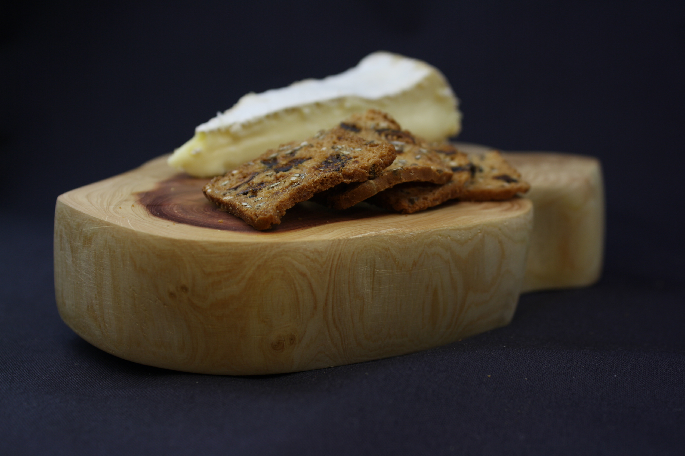

project //
cutting board in juniper
occasion/context
An Oakland resident was giving away wood from his 60-year-old juniper tree via craigslist.
objective
With previous fabrication work using the laser cutter, I was limited to using very specific types of wood (i.e. sheets, no thicker than 1/4 inch). I wanted to expand my material domain and open myself to real wood-- wood without tidy geometry, no two pieces identical.
process
1) cut the log into cross sections using a bowsaw
2) remove the bark using a miniture crowbar
3) plane the cross sections using a hand planar
4) sand the board in increments from 50 grit to 600 grit
5) finish the board in mineral oil

cutting board with cheese and crackers